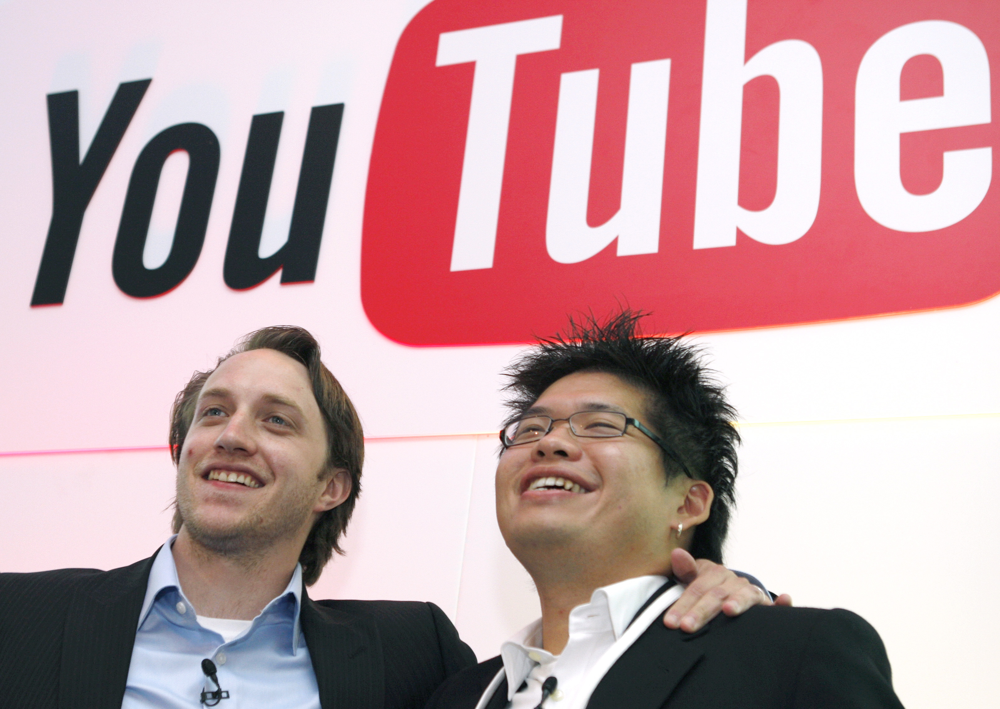

A partir de agosto de 2018, el sitio web está clasificado como el segundo sitio más popular del mundo, según Alexa Internet, justo detrás de Google. A partir de mayo de 2019, se suben a YouTube más de 500 horas de contenido de vídeo cada minuto. Según los ingresos publicitarios trimestrales reportados, se estima que YouTube tiene ingresos anuales de US $ 15 mil millones.
YouTube se ha enfrentado a críticas sobre aspectos de sus operaciones, incluido el manejo del contenido con derechos de autor contenido en los videos subidos, sus algoritmos de recomendación que perpetúan videos que promueven teorías de conspiración y falsedades, albergan videos aparentemente dirigidos a niños pero que contienen violencia o sugerencia sexual, videos de menores que atraen actividades pedófilas en sus secciones de comentarios y políticas fluctuantes sobre los tipos de contenido que pueden ser monetizados con publicidad.
PAÍS
De los 131.5 millones de personas que habitan en el país, el 67% de la población son usuarios activos de redes sociales y el 64% las utiliza a través de dispositivos móviles. Estas son las redes con más usuarios activos:
COLOMBIA
De los 49.66 millones de personas que habitan en el país, el 68% de la población son usuarios activos de redes sociales y el 62% las utiliza a través de dispositivos móviles. Estas son las redes con más usuarios activos:
De los 18.27 millones de personas que habitan en el país, el 77% de la población son usuarios activos de redes sociales y el 71% las utiliza a través de dispositivos móviles. Estas son las redes con más usuarios activos de acuerdo con el reporte Digital News Report de Reuters:
ARGENTINA
De los 44.90 millones de personas que habitan en el país, el 76% de la población son usuarios activos de redes sociales y el 69% las utiliza a través de dispositivos móviles. Estas son las redes con más usuarios activos: